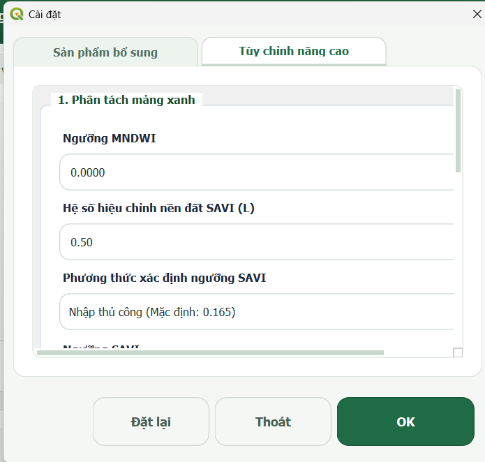

Cài đặt tham số
Trang này hướng dẫn chi tiết ý nghĩa khoa học, vai trò thuật toán và cách thiết lập các tham số trong cửa sổ Cài đặt của Plugin Green Space Evaluator.

1. Tổng quan bảng tham số
Người dùng có thể mở cửa sổ cấu hình bằng cách nhấn nút Cài đặt (biểu tượng bánh răng ở góc trên bên phải giao diện chính) và chọn tab Tùy chỉnh nâng cao:
| Nhóm | Tham số trên giao diện | Giá trị cấu hình | Đơn vị | Ý nghĩa khoa học & Vai trò thuật toán |
|---|---|---|---|---|
| Chỉ số phổ | Ngưỡng MNDWI | 0.000 |
— | Giá trị cấu hình chuẩn production. Pixel có \(\text{MNDWI} > 0.000\) được xác định là nước và loại trừ trước khi phân tích thực vật. |
| Chỉ số phổ | Hệ số hiệu chỉnh nền đất SAVI (L) | 0.50 |
— | Hệ số hiệu chỉnh nền đất \(L = 0.50\), giảm thiểu tác động phản xạ của đất trống trong môi trường đô thị. |
| Trích xuất mảng xanh | Ngưỡng SAVI | 0.165 (Thủ công) |
— | Ngưỡng SAVI bóc tách thực vật sau khi loại trừ mặt nước (giá trị cấu hình mặc định nhập thủ công: 0.165; có tùy chọn tự động theo mẫu nếu cần). |
| Trích xuất mảng xanh | Diện tích mảng xanh tối thiểu (\(A_{\min}\)) | 5000.0 |
m² | Ngưỡng lọc bỏ các mảng thực vật nhỏ lẻ manh mún (thảm cỏ nhỏ, dải phân cách, bóng cây). Chỉ giữ các mảng xanh có diện tích \(\ge 5000.0\text{ m}^2\). |
| Vùng phục vụ | Bán kính phục vụ tối đa (\(R_{\max}\)) | 300.0 |
m | Giới hạn trên của miền tìm kiếm bán kính phục vụ \([0, R_{\max}]\) cho từng mảng xanh độc lập. |
| Vùng phục vụ | Chỉ tiêu diện tích mảng xanh tối thiểu (\(C_{\min}\)) | 6.0 |
m²/người | Chỉ tiêu diện tích mảng xanh bình quân đầu người tối thiểu dùng để xác định sức chứa dân số phục vụ tối đa: \(P_{\max, i} = S_i / C_{\min}\). |
| Thuật toán | Bước tìm kiếm bán kính (\(\Delta d\)) | 50.0 |
m | Bước giảm bán kính trong giai đoạn khoanh vùng nghiệm của Module 3. |
| Thuật toán | Ngưỡng sai số hội tụ dân số (\(e\)) | 1.0 |
người | Tham số hội tụ số học dùng làm điều kiện dừng của tìm kiếm nhị phân: \(P(R_{\text{high}}) - P(R_{\text{low}}) \le e\). |
2. Tham số trích xuất mảng xanh và ngưỡng SAVI
2.1. Ngưỡng SAVI và hệ số L
- Trong cấu hình chuẩn production, Plugin sử dụng chế độ nhập thủ công với giá trị \(\text{SAVI} = 0.165\) và \(L = 0.50\), đảm bảo bóc tách chính xác các mảng xanh thực vật sau khi đã triệt tiêu toàn bộ mặt nước bằng ngưỡng \(\text{MNDWI} = 0.000\).
- Người dùng có thể linh hoạt chuyển sang chế độ Tự động xác định theo mẫu nếu có nhu cầu phân tích đặc thù.
2.2. Diện tích mảng xanh tối thiểu (\(A_{\min} = 5000\text{ m}^2\))
- Áp dụng bộ lọc diện tích để loại bỏ các mảng cây xanh nhỏ lẻ, manh mún dưới \(5000\text{ m}^2\) (tương đương 50 pixel \(10\text{ m} \times 10\text{ m}\)).
- Sau khi lọc diện tích, thuật toán thực hiện phân tích thành phần liên thông 8-lân cận để định danh duy nhất
PATCH_IDcho từng mảng xanh và chuyển đổi sang dạng vector polygon.
3. Mô hình hóa vùng phục vụ mảng xanh
Vùng phục vụ của từng mảng xanh được mô hình hóa độc lập trên không gian vector dựa trên diện tích mảng xanh, dân số được phân bổ theo không gian và khoảng cách hình học.
3.1. Dân số phục vụ tối đa (\(P_{\max, i}\))
Với mỗi mảng xanh độc lập \(i\) có diện tích \(S_i\), dân số phục vụ tối đa được xác định theo:
Trong đó: - \(P_{\max, i}\): Dân số phục vụ tối đa của mảng xanh \(i\) (người). - \(S_i\): Diện tích mảng xanh \(i\) (\(\text{m}^2\)). - \(C_{\min}\): Chỉ tiêu diện tích mảng xanh bình quân đầu người tối thiểu (\(6.0\text{ m}^2/\text{người}\)).
3.2. Giới hạn trên của miền tìm kiếm (\(R_{\max}\))
- \(R_{\max}\) (Bán kính phục vụ tối đa): Đóng vai trò là giới hạn trên của miền tìm kiếm \([0, R_{\max}]\) trong thuật toán (mặc định \(300.0\text{ m}\)).
- \(R_{\max}\) không phải là bán kính áp đặt cố định cho mọi mảng xanh, mà là cận trên để khống chế không gian tìm kiếm.
3.3. Phương pháp tìm kiếm hai giai đoạn xác định bán kính khả thi (\(R^*\))
Thuật toán xác định bán kính phục vụ \(R^*\) qua phương pháp tìm kiếm hai giai đoạn:
- Đánh giá hai điểm mút và điều kiện biên:
- Nếu \(P_i(0) > P_{\max, i}\): Mảng xanh quá tải ngay tại nguồn \(\rightarrow\) Trạng thái
NO_SOLUTION, gán \(R^* = 0\text{ m}\). - Nếu \(P_i(R_{\max}) \le P_{\max, i}\): Mảng xanh đủ diện tích phục vụ toàn bộ dân số lân cận đến cự ly tối đa \(\rightarrow\) Trạng thái
RMAX, gán \(R^* = R_{\max}\). -
Nếu \(P_i(0) \le P_{\max, i} < P_i(R_{\max})\): Tồn tại nghiệm trong khoảng \((0, R_{\max}) \rightarrow\) Trạng thái
BINARY_SEARCH, kích hoạt tìm kiếm hai giai đoạn: -
Giai đoạn 1 — Khoanh vùng nghiệm:
-
Bắt đầu từ \(R_{\text{high}} = R_{\max}\) và giảm dần theo bước \(\Delta d = 50\text{ m}\) (\(R_{\text{candidate}} = R_{\text{high}} - \Delta d\)) cho đến khi tìm được cặp cận \([R_{\text{low}}, R_{\text{high}}]\) thỏa mãn: $\(P_i(R_{\text{low}}) \le P_{\max, i} < P_i(R_{\text{high}})\)$
-
Giai đoạn 2 — Tinh chỉnh nghiệm bằng tìm kiếm nhị phân:
- Thu hẹp khoảng \([R_{\text{low}}, R_{\text{high}}]\) với điểm giữa \(R_{\text{mid}} = (R_{\text{low}} + R_{\text{high}}) / 2\) cho đến khi chênh lệch dân số giữa hai cận thỏa điều kiện dừng hội tụ số học: $\(P_i(R_{\text{high}}) - P_i(R_{\text{low}}) \le e \quad (\text{với } e = 1.0\text{ người})\)$
- Nghiệm bán kính khả thi được chọn là \(R^* = R_{\text{low}}\) (cận dưới khả thi của khoảng nghiệm, đảm bảo dân số phục vụ thực tế không vượt quá sức chứa tối đa \(P_{\max, i}\)).
Bản chất khái niệm bán kính phục vụ R*
\(R^*\) là bán kính phục vụ được xác định riêng cho từng mảng xanh dựa trên diện tích mảng xanh đó, mật độ dân số phân bổ xung quanh và các tham số \(C_{\min}, R_{\max}, \Delta d, e\). Nghiệm bán kính khả thi được chọn là \(R^* = R_{\text{low}}\) (cận dưới khả thi của khoảng nghiệm đảm bảo dân số phục vụ thực tế không vượt quá \(P_{\max, i}\)).
4. Khi nào nên thay đổi tham số?
🟢 Có thể chủ động thay đổi
- Bán kính phục vụ tối đa (\(R_{\max}\)): Khi cần mở rộng hoặc thu hẹp miền tìm kiếm phù hợp với cự ly nghiên cứu của đề tài.
- Chỉ tiêu diện tích mảng xanh bình quân đầu người tối thiểu (\(C_{\min}\)): Khi áp dụng các chỉ tiêu quy chuẩn khác nhau (ví dụ: \(4.0\), \(6.0\), \(8.0\text{ m}^2/\text{người}\)) hoặc kịch bản nghiên cứu so sánh.
- Diện tích lọc mảng xanh tối thiểu (\(A_{\min}\)): Khi cần điều chỉnh quy mô mảng xanh phù hợp với hiện trạng khu vực.
🟡 Nên cân nhắc kỹ
- Bước tìm kiếm bán kính (\(\Delta d\)): Mặc định \(50\text{ m}\) giúp cân bằng tối ưu giữa số bước khoanh vùng và số phép tính giao cắt hình học.
- Ngưỡng hội tụ dân số (\(e\)): Mặc định \(1.0\text{ người}\) đảm bảo độ chính xác số học cao trong tìm kiếm nhị phân.
🔵 Nên giữ mặc định
- Ngưỡng MNDWI (
0.000): Chuẩn phân tách mặt nước. - Hệ số \(L\) (
0.50): Hiệu chỉnh phản xạ nền đất. - Ngưỡng SAVI (
0.165): Chuẩn bóc tách thực vật.
5. Tính lan truyền của tham số
Lưu ý tính liên hoàn giữa các module
Các tham số trong Plugin có mối liên hệ chuỗi chặt chẽ:
- Thay đổi ngưỡng MNDWI hoặc SAVI sẽ thay đổi diện tích mảng xanh \(S_i\).
- Diện tích \(S_i\) thay đổi làm thay đổi dân số phục vụ tối đa \(P_{\max, i} = S_i / C_{\min}\), từ đó trực tiếp làm thay đổi bán kính \(R_i^*\).
- Bán kính \(R^*\) thay đổi sẽ làm thay đổi diện tích vùng phục vụ chung
SERVICE_UNION, phân rã không gian xây dựng (trong/ngoài vùng phục vụ) và toàn bộ các chỉ tiêu thống kê hành chính ở Module 5.